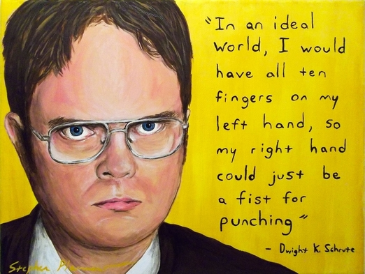

Dwight Shrute quotes that will blow your mind and will teach you how to live properly
“Before I do anything I ask myself, ‘Would an idiot do that?’ and if the answer is yes, I do not do that thing.”
Dwight's phylosophy of life
Remember this
- “Reject a woman, and she will never let it go. One of the many defects of their kind. Also, weak arms.”
- “I never smile if I can help it, Showing one’s teeth is a submission signal in primates. Someone smiles at me, all I see is a chimpanzee begging for it’s life.”
- “Bread is the paper of the food industry. You write your sandwich on it.”
Dwight's friends
Dwight has a lot of good friends. I think his best friend is beet. It's very nutritious. Click on the link below to see the greatness of Shrute Farms: